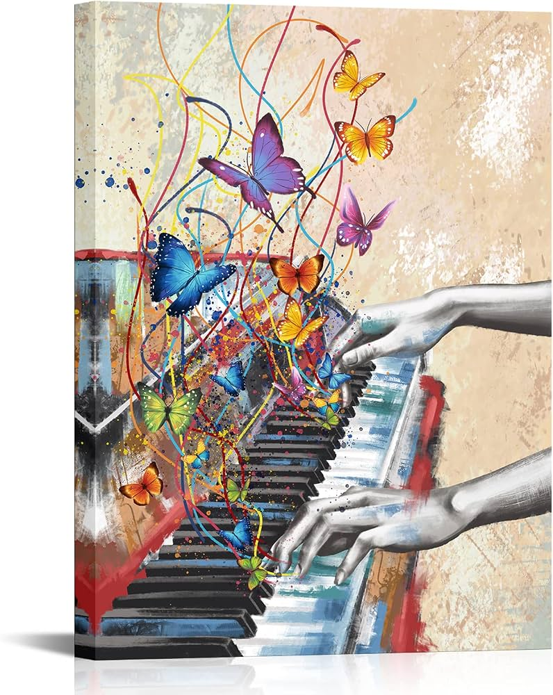

A relaxing space for music to help you unwind, focus on studying, and work efficiently.
Lofi (Low-fidelity) music is a genre characterized by its unpolished sound quality, combined with gentle rhythms to help melt away stress after long working hours.

You can listen to more relaxing piano music on YouTube Piano Relaxing Video.